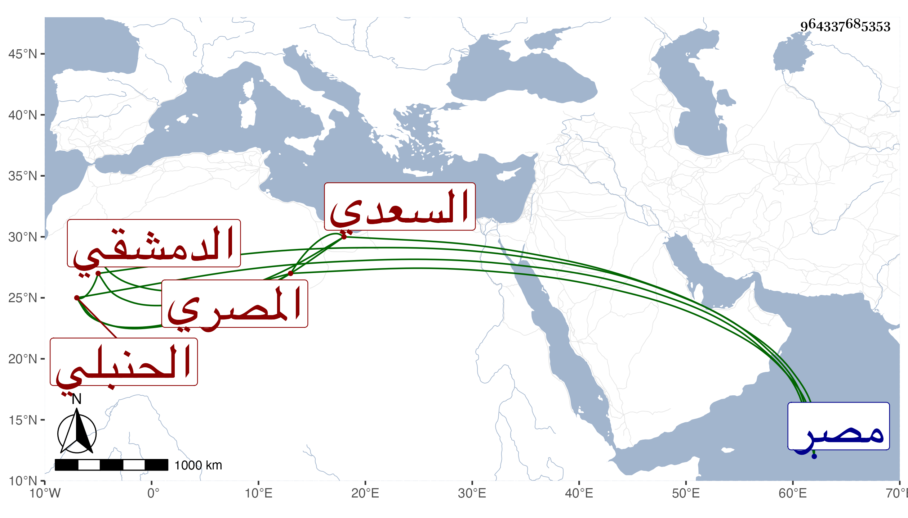

0902Sakhawi.DawLamic.ITO20230111-ara1.EIS1600.964337685353
Biography ID: 964337685353
182
أبو بكر بن أبي المجد بن ماجد بن أبي المجد بن بدر بن سالم العماد السعدي الدمشقي ثم المصري الحنبلي . ولد سنة ثلاثين وسبعمائة وسمع من المزي والذهبي وغيرهما وأحب الحديث فحصل طرفا صالحا منه وسكن مصر قبل الستين فقرر في طلبة الشيخونية فلم يزل بها حتى مات وجمع الأوامر والنواهي من الكتب الستة فجوده وكان مواظبا على العمل بما فيه وكذا اختصر تهذيب الكمال وحدث عن الذهبي بترجمة البخاري بسماعه منه . ذكره شيخنا في أنبائه وقال اجتمعت به وأعجبني سمته وانجماعه وملازمته للعبادة . مات في آخر جمادى الأولى سنة أربع وذكره المقريزي في عقوده مطولا وأنه انفرد بأشياء منها وجوب الصلاة على النبي صلى الله عليه وسلم في دعاء الاستفتاح .
